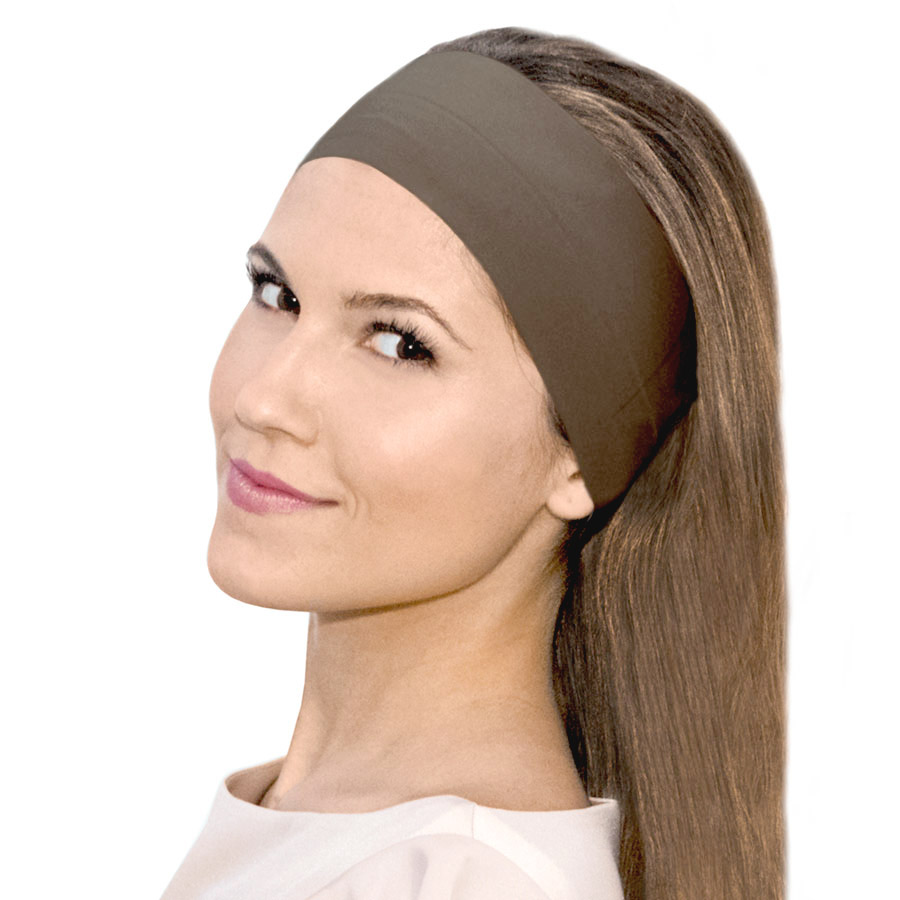
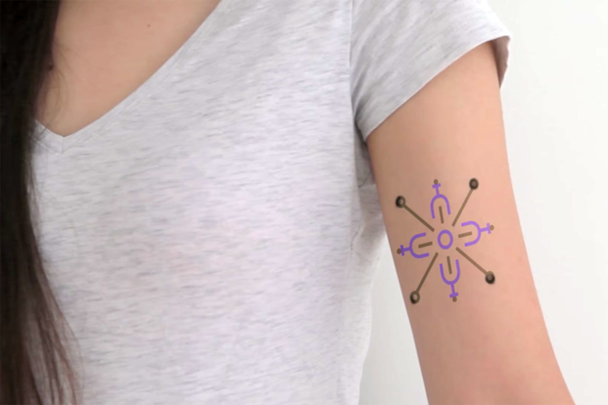
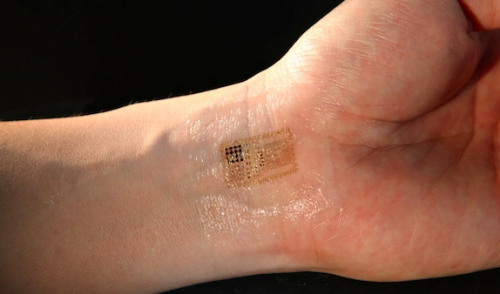

ASSIGNMENTS
Wearables are any sort of technology that humans can wear and interact with wirelessly. An example of a wearable would a smart watch or a fitness tracker.
My first assignment was to come up with a concept for some sort of wearable that measures brainwaves and uses those to help stimulate social interaction between people in the same room. At first I had to find out what brainwaves are, how are they measured and what do they mean. I am going to post some links about that stuff below, but what I found is there isn’t really that much of information yet on what kind of frequency our brainwaves have that relates to emotions, so whatever this wearable was going to be had to be pretty lo-fi and simple. Then next I looked into how brainwaves are measured: which would be with sensors around the head, so obviously my wearable needed to some sort of headdress: a headband or a headwrap, something that would cover a lot of surface on the head to be able to collect data with frequency sensors.
Since there are only so things we can interpret with clarity about brainwaves, we can’t really make this a source of reliable communication, so the product would have to be just a vague indicator of someone’s peace of mind.
Essentially, the product (a headband or headwrap) would just have some sort of basic output like a small glowing light that would let you and others around in you in the same room know whether they can approach you or not. Let’s say that you are in the library and you need some help on your assignment, but you do not know who to ask. The headband would come into play by displaying a certain colour on everyone’s headband. For example, if someone is focused heavily on mental activity, their brainwaves would be on beta waves (12-38Hz) and their headband would glow in a violet colour, but someone’s headband who is more relaxed and not that engaged in mental activity, would glow in blue. You would know to ask the person with the blue headband for help instead of the violet, as to not disturb the person.
My second assignment was to come up with some sort of smart tattoo that also stimulates social interaction between people. When googling online for ideas, I found plenty of already existing smart tattoos, with NFC chips or lights or some smart tattoos for medical purposes, like measuring insulin. I thought that if tattoos can light up, they could maybe use the light to make people find similar people, create a sort of community. My idea is pretty vague when it comes to design. The tattoo can be of absolutely anything as long as it has some sort of RGB light attached to it that could be wirelessly connected to a cloud. These tattoos would work together with an app into which users can input data about themselves: their interests, hobbies, favourites. Then, the app would look for people around the user, who also have this tattoo and have things in common. Then, the tattoos would glow in the same colour for both of the people, creating a sort of Match, like on Tinder. People are not forced to act upon this, but it could help alleviate social stress in situations where you are surrounded by strangers, for example.
 RESEARCH
I was captivated by the idea of smart tattoos as I myself have a couple of tattoos and love the culture around them. There are so many different possibilities for smart tattoos. Just as there are endless different sensors there are endless possibilities for these smart tattoos. Embedded LEDs that change colour or intensity when touched or even embedded NFC tags under the skin to replace an OV-chipkaart. There are even medical uses for smart tattoos. For example a tattoo that would change colour if the person’s insulin level is too high or low (for diabetic people). I find this to be an incredibly elegant and beautiful way to help people with diseases monitor their health.
Just like there are endless things humans can wear there are endless opportunities for wearable technologies. I was interested in hairbands that could track brainwaves so I had to dig a little deeper into what they actually are. Brainwaves are synchronised electrical pulses from masses of neurons communicating with each other. These can be read by placing sensors on the scalp.
Microsoft smart tattoos Harvard smart tattoos What are brainwaves? Meditation headsetREFLECTION
The topic of wearables in essence is super interesting to me as I can imagine wearables are probably going to be a very big thing in the future. I enjoyed working on this assignment, although I struggled with the brainwaves quite a bit, as I am not a neuroscientist. I am always up for challenges though so I made it my own. I see the future of wearables as incredibly widespread, but I don't think this is something for me. I haven't even gotten myself a smartwatch. Nevertheless, even if I have no interest in these kinds of things, it was still very educational and I found myself actually really captivated by the concept of smart tattoos.